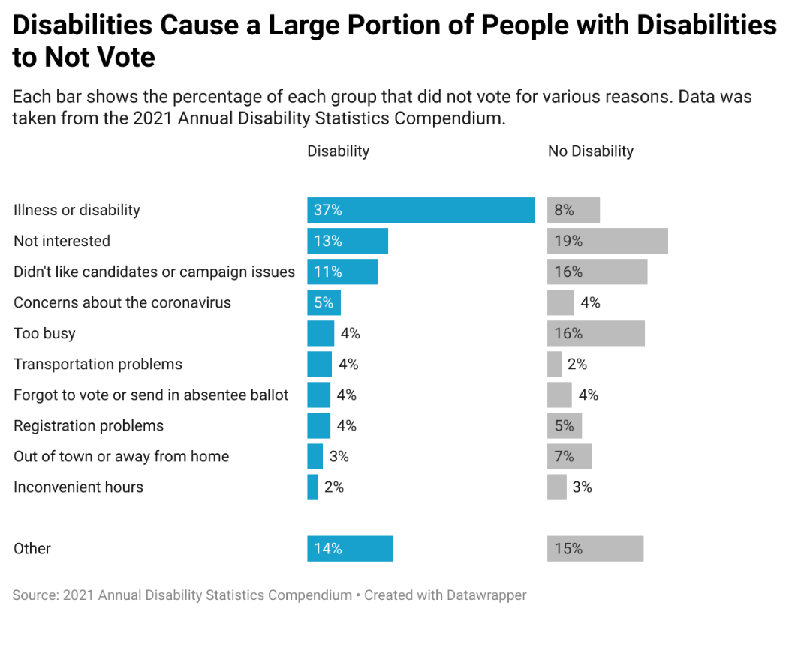

Why Is It Important?
More americans then you might think have a disablility, the CDC estimates roughly 1 in 4 americans have a disability. Which these Disabilities can range from imparment of vision, hearing, cognitive function, or mobility issues. Despite the advancement of technology and increased accessability options in public spaces, 1 in 7 voter with a disability reported reported having difficulty voting in the 2022 midterm elctions.
Based on information provided by Campaign legalThe Reason People With Disabilities Didn't Vote
While it goes without saying that people with diabilities are going to have more dificulty voting due to their disabilities. The graphic above shows that there is still a large majority of people with disabilities who are still having a hard time voting because of their diabilities. This can be due to the lack of accesibility for people with cognitive, and visual disabilities. This can also be due to the fact that some states have laws in place that can and will exclude people with disabilities from voting.
Based on information provided byCenter for Reasearch on Disability